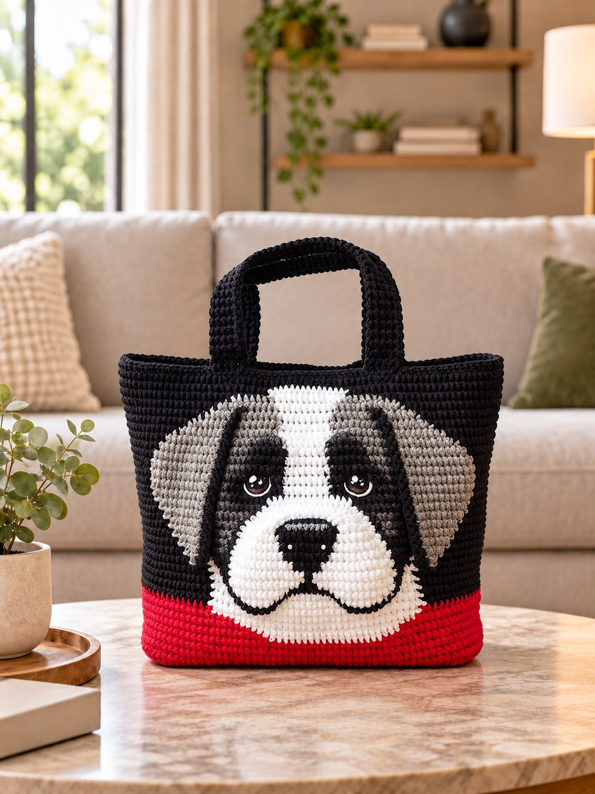
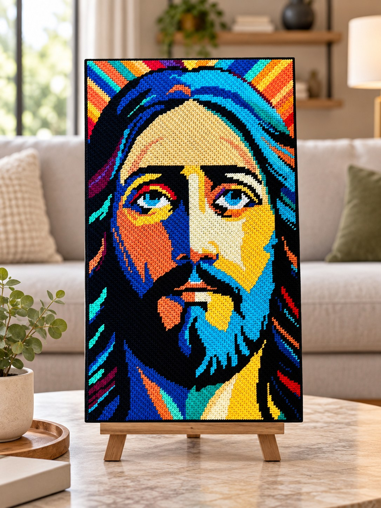
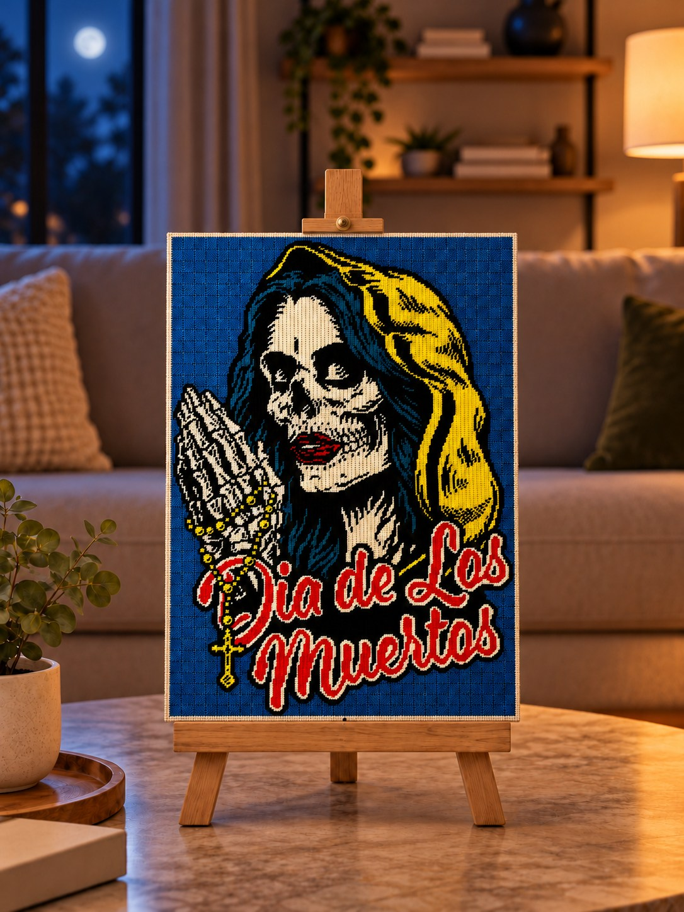
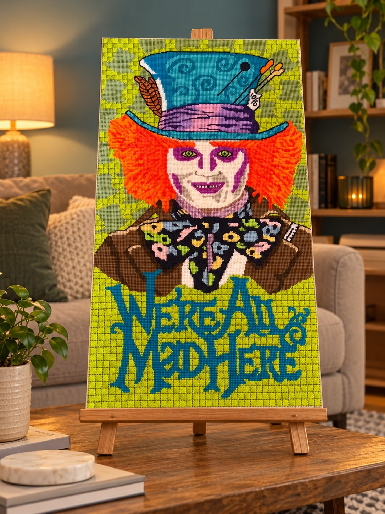
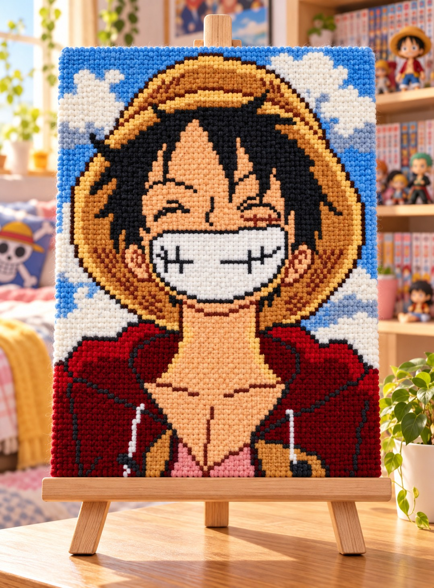
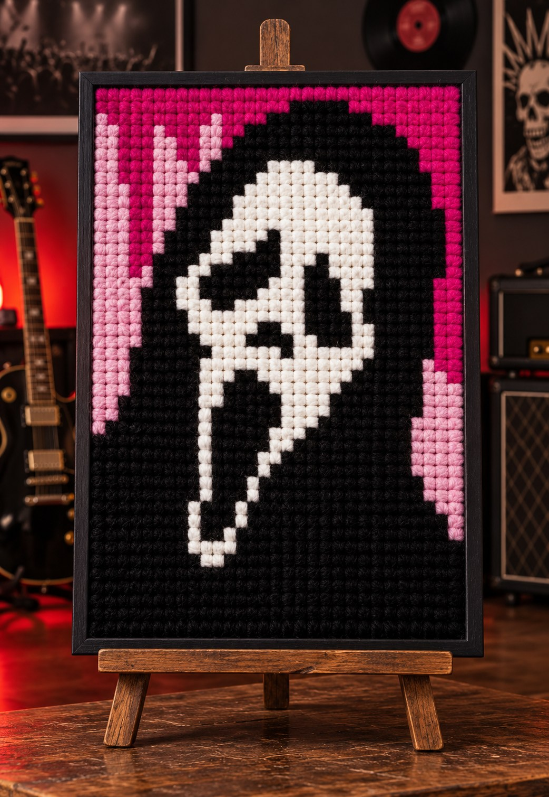
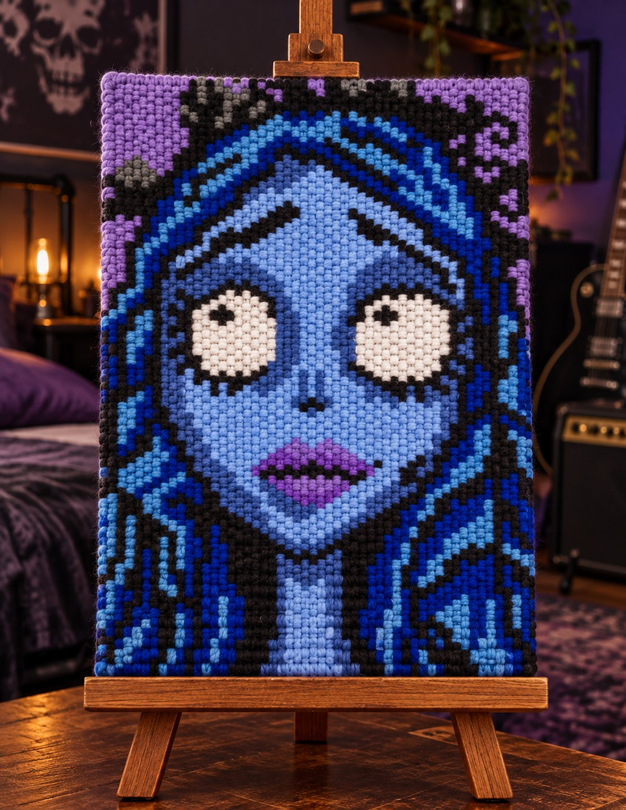

Arte textil hecho a mano
Hilos que se convierten en historias.
El canvas tejido es una expresión de arte textil que une color, paciencia y detalle. En Arte que Nace transformamos lana e hilos en cuadros, figuras, bolsos y piezas personalizadas que celebran personajes, recuerdos e ideas únicas.







Descubre
Elegidos para ti
Cargando categorías
Nosotros